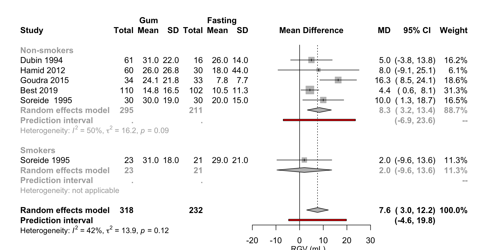
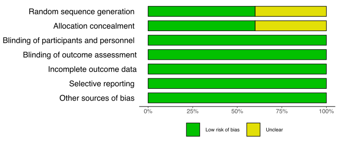
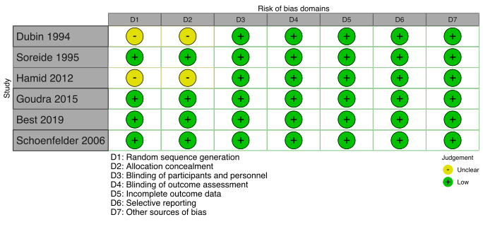
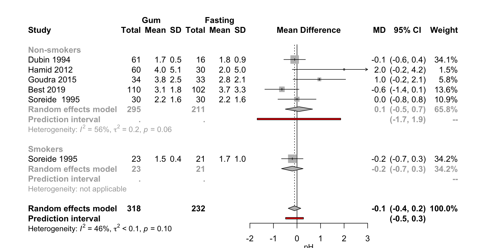
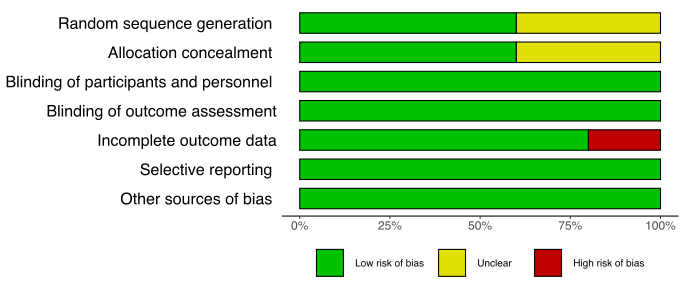
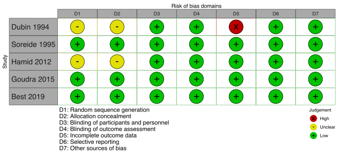
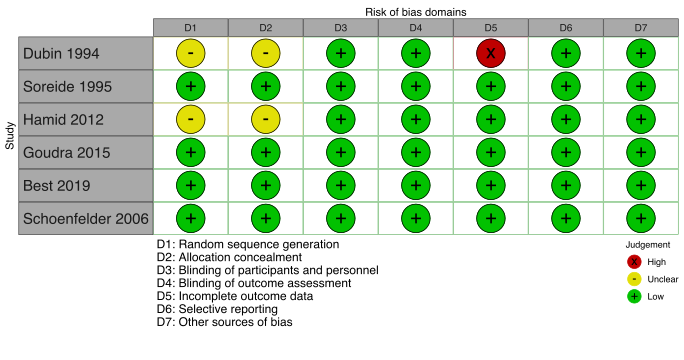

Chewing Gum
14 May, 2021 (10:15)
Included Studies
Table 1. Included studies according to age, surgery, and design (see References for citations).
| ID | Study | Analyzed (N) | Centers | Countrya | Surgery |
|---|---|---|---|---|---|
| Adult, Surgical | |||||
| RCT | |||||
| 6038 | Dubin 1994 | 77 | 1 | USA | |
| 8584 | Soreide 1995 | 104 | 1 | Norway | Gyn |
| 6287 | Hamid 2012 | 150 | 1 | Irana | |
| 2364 | Goudra 2015 | 67 | 1 | USA | Other GI |
| 353 | Best 2019 | 212 | 1 | New Zealand | |
| 380 | Garcia 2019 | 102 | 1 | Brazila | |
| Case Series | |||||
| 2009 | Shanmugam 2016 | 9 | 1 | Australia | |
| Adult, Non-surgical | |||||
| Crossover | |||||
| 1314 | Bouvet 2017 | 20 | 1 | France | None (healthy) |
| Single Arm Trial | |||||
| 433 | Valencia 2019 | 55 | 1 | Colombiaa | None (healthy) |
| Pediatric, Surgical | |||||
| RCT | |||||
| 4926 | Schoenfelder 2006 | 46 | 1 | USA | |
| a Non very high Human Development Index country. | |||||
Patient Reported Outcomes
Thirst
Table 2. Summary and individual study risk of bias appraisals for pooled parallel randomized controlled trials (n = 4) examining residual gastric volume.
|
Last Chewing
|
Time
|
||||||
|---|---|---|---|---|---|---|---|
| Author | Treatment | N | Time (hr)a | Chewing | Median | IQR | Scaleb |
| Adult, Surgical | |||||||
| RCT | |||||||
| Garcia 2019 | Fasting | 51 | 5 | (4-7) | 0➞10 | ||
| Gum sugarfree | 51 | NR | 10 | 3 | (2-4) | ||
| Med: median; IQR: interquartile range; RCT: randomized controlled trial; NR: not reported. | |||||||
| a Before induction | |||||||
| b Numeric rating scale: 0 (without thirst) to 10 (intense thirst) | |||||||
Figure 1. Calculated mean difference in thirst scores in Garcia 2017 — gum chewing versus fasting.

MD: mean difference; NRS: numeric rating scale.
Means calculated from medians and interquartile ranges. Authors reported standardized mean difference of 0.60 (p< 0.001) obtained from p-value.
Residual Gastric Volume
Randomized Trials
Table 3. Residual gastric volumes at induction in randomized controlled trials of adult patients undergoing surgery according to fasting and gum chewing.
| Author | Treatment | N | Time (hr)a | Measure | Measured | Mean (SD) | Median | IQR | Range |
|---|---|---|---|---|---|---|---|---|---|
| Adult, Surgical | |||||||||
| RCT | |||||||||
| Dubin 1994 | Fasting | 16 | Asp | Induction | 26 (14) | (9-60) | |||
| Gum Sugarfree | 46 | 0 | 28 (19) | (4-65) | |||||
| Gum Sugarfree | 15 | 0.33 | 40 (30) | (5-93) | |||||
| Soreide 1995 | Fasting | 30 | Asp | Induction | 20 (15) | ||||
| Gum Sugarfree | 30 | 0 | 30 (19) | ||||||
| Fastingb | 21 | Asp | Induction | 29 (21) | |||||
| Gum Nicotineb | 23 | 0 | 31 (18) | ||||||
| Hamid 2012 | Fasting | 30 | Asp | Induction | 18 (44) | ||||
| Water | 30 | 2 | 26 (33) | ||||||
| Lollipop | 30 | 2 | 20 (27) | ||||||
| Gum Sugarfree | 30 | 2 | 27 (27) | ||||||
| Gum (Bicarb) | 30 | 2 | 25 (27) | ||||||
| Goudra 2015 | Fasting | 33 | Asp | Induction | 0.11 (0.11)c | 6 | (1-14) | ||
| Gum Sugared | 34 | 0 | 0.34 (0.31)c | 13 | (8-41) | ||||
| Best 2019 | Fasting | 102 | Asp | Induction | 8 | (4-19) | |||
| Gum Sugarfree | 110 | 0 | 12 | (5-27) | |||||
| Adult, Non-surgical | |||||||||
| Crossover | |||||||||
| Bouvet 2017 | Water | 20 | US | 2 hour | 32 (19) | ||||
| Gum Sugared | 20 | 0 | 38 (14) | ||||||
| Single Arm Trial | |||||||||
| Valencia 2019 | Gum Sugarfree | 55 | 0 | US | 1 hour | 23 (45) | 0 | (0-143) | |
| Pediatric, Surgical | |||||||||
| RCT | |||||||||
| Schoenfelder 2006 | Fasting | NR | Asp | Induction | 0.35cde | (0.2-0.5)cde | |||
| Gum Sugarfree | NR | 0 | Induction | 0.88cde | (0.6-1.4)cde | ||||
| Gum Sugared | NR | 0 | Induction | 0.69cde | (0.4-1.6)cde | ||||
| RGV: residual gastric volume; SD: standard deviation; IQR: interquartile range; RCT: randomized controlled trial; Bicarb: bicarbonate; Asp: aspiration; US: ultra- sound; NR: not reported. | |||||||||
| a Before induction. | |||||||||
| b Smokers. | |||||||||
| c mL/kg. | |||||||||
| d 2 hr after ingestion of 250 mL and gum chewing. | |||||||||
| e p < 0.001 for comparison with fasting. | |||||||||
Pooled Results
Figure 2. Forest plot for pooled mean difference for residual gastric volume in randomized controlled trials of adult surgical patients — gum chewing versus fasting.

MD: mean difference;RGV: residual gastric volume.
Gum arms combined for Dubin 1994 and Hamid 2012. Goudra 2015 estimates assume a 70 kg patient for pooling.
Risk of Bias — RGV, RCTs
Figure 3. Summary and individual study risk of bias appraisal for pooled randomized controlled trials examining residual gastric volume.


Gastric pH
Randomized Trials
Table 4. Gastric pH at induction in randomized controlled trials of patients undergoing surgery according to fasting, liquid and volume.
|
Time
|
||||||||
|---|---|---|---|---|---|---|---|---|
| Author | Treatment | N | Time (hr)a | Measured | Mean (SD) | Median | Range | IQR |
| Adult, Surgical | ||||||||
| RCT | ||||||||
| Dubin 1994 | Fasting | 16 | Induction | 1.8 (0.9) | (1.0-4.6) | |||
| Gum Sugarfree | 15 | 0.33 | 1.6 (0.2) | (1.3-1.9) | ||||
| Gum Sugarfree | 46 | 0 | 1.7 (0.6) | (1.0-4.4) | ||||
| Soreide 1995 | Fasting | 30 | Induction | 2.2 (1.6) | ||||
| Gum Sugarfree | 30 | 0 | 2.2 (1.6) | |||||
| Fastingb | 21 | Induction | 1.7 (1.0) | |||||
| Gum Nicotineb | 23 | 0 | 1.5 (0.4) | |||||
| Hamid 2012 | Fasting | 30 | Induction | 2 (5) | ||||
| Water | 30 | 2 | 3 (5) | |||||
| Lollipop | 30 | 2 | 3 (5) | |||||
| Gum Sugarfree | 30 | 2 | 3 (5) | |||||
| Gum (Bicarb) | 30 | 2 | 5 (5) | |||||
| Goudra 2015 | Fasting | 33 | Induction | 2.8 (2.1) | ||||
| Gum Sugared | 34 | 0 | 3.8 (2.5) | |||||
| Best 2019 | Fasting | 102 | Induction | 3.0 | (1.8-6.2) | |||
| Gum Sugarfree | 110 | 0 | 2.5 | (2.1-4.5) | ||||
| Pediatric, Surgical | ||||||||
| RCT | ||||||||
| Schoenfelder 2006 | Fasting | NR | Induction | 1.9 | (0.0-2.5) | |||
| Gum Sugarfree | NR | 0 | 2.2 | (2.1-3) | ||||
| Gum Sugared | NR | 0 | 2.2 | (1.3-3.4) | ||||
| SD: standard deviation; IQR: interquartile range; RCT: randomized controlled trial; Bicarb: bicarbonate; Asp: aspiration; NR: not reported. | ||||||||
| a Before induction | ||||||||
| b Smokers | ||||||||
Pooled Results
Figure 4. Forest plot for pooled mean difference for pH in randomized controlled trials of adult surgical patients — gum chewing versus fasting.

MD: mean difference.
Gum arms combined for Dubin 1994 and Hamid 2012 .
Risk of Bias — pH, RCTs
Figure 5. Summary and individual study risk of bias appraisals for pooled parallel randomized controlled trials (n = 4) examining residual gastric volume.


Safety
Shanmugam et al. (2016) reviewed 9 chewing gum incidents reported to the WebAIRS database between 2005 and 2016. Four patients were considered at high risk for aspirating gum, but none did. In 3 patients, gum was identified in the recovery room and in 1 near the vocal cords.
The authors concluded, “We recommend that patients should be specifically advised to avoid gum chewing once fasting from clear fluids is commenced, and that a specific question regarding the presence of chewing gum should be added to all preoperative checklists.”
Study/Participant Detail
Study Characteristics
Table 5. Characteristics of included studies examining chewing gum.
|
Enrolled
|
Anesthetic
|
|||||||||
|---|---|---|---|---|---|---|---|---|---|---|
| Study | Dates | Country | (N) | Pilot | Setting | Gen | Reg | Sed | Type of Surgery | Registered |
| Adult, Surgical | ||||||||||
| RCT | ||||||||||
| Dubin 1994 | USA | 77 | Amb | • | No detail | |||||
| Soreide 1995 | NOR | 106 | Hosp | • | Gyn | |||||
| Hamid 2012 | 01/05‒12/06 | IRN | 150 | Hosp | • | No detail | ||||
| Goudra 2015 | 11/11‒07/13 | USA | 73 | Hosp | • | Other GI | ||||
| Best 2019 | 02/17‒08/18 | NZL | 237 | Hosp | • | Endoscopy | • | |||
| Garcia 2019 | 01/17‒03/17 | BRA | 215 | Hosp | Elective | • | ||||
| Case Series | ||||||||||
| Shanmugam 2016 | 09/09‒02/15 | AUS | 9 | Hosp | No detail | |||||
| Adult, Non-surgical | ||||||||||
| Crossover | ||||||||||
| Bouvet 2017 | 03/16‒10/16 | FRA | 20 | Hosp | None (healthy) | • | ||||
| Single Arm Trial | ||||||||||
| Valencia 2019 | 07/16‒01/16 | COL | 55 | Hosp | None (healthy) | • | ||||
| Pediatric, Surgical | ||||||||||
| RCT | ||||||||||
| Schoenfelder 2006 | USA | 46 | Hosp | • | No detail | |||||
| Gen: general; Reg: regional; Sed: sedation; Hosp: hospital; Amb: ambulatory | ||||||||||
Sample Characteristics
Table 6. Characteristics of patients in included studies.
| Study | Analyzed | I | II | I-II | III | (%) | Mean | Med | White | Black | Asian | Mean | Med | DM (%) |
|---|---|---|---|---|---|---|---|---|---|---|---|---|---|---|
| Adult, Surgical | ||||||||||||||
| RCT | ||||||||||||||
| Dubin 1994 | 138 | 100 | 73 | 32 | ||||||||||
| Soreide 1995 | 104 | 100 | 100 | 40 | ||||||||||
| Hamid 2012 | 150 | 100 | 49 | 34 | ||||||||||
| Goudra 2015 | 67 | 49 | 50 | 29 | ||||||||||
| Best 2019 | 212 | 57 | 64 | 28 | 9 | |||||||||
| Garcia 2019 | 102 | 64 | 31 | 5 | 58 | 39 | ||||||||
| Case Series | ||||||||||||||
| Shanmugam 2016 | 9 | |||||||||||||
| Adult, Non-surgical | ||||||||||||||
| Crossover | ||||||||||||||
| Bouvet 2017 | 40 | 25 | 27 | |||||||||||
| Case Series | ||||||||||||||
| Valencia 2019 | 55 | 54 | 22 | 22 | ||||||||||
| Pediatric, Surgical | ||||||||||||||
| RCT | ||||||||||||||
| Schoenfelder 2006 | 46 | 5-17a | ||||||||||||
| Med: median | ||||||||||||||
| a Range | ||||||||||||||
Fasting and Gum Timing
Table 7. Fasting times and gum chewing protocols according to study arm.
| Study | Comparator | N | Solids | Liquids | Chewing or Time | Gum Chewing | |
|---|---|---|---|---|---|---|---|
| Adult, Surgical | |||||||
| RCT | |||||||
| Dubin 1994 | Fasting | 16 | |||||
| Gum Sugarfree | 15 | arrival | call to OR | ||||
| Gum Sugarfree | 46 | arrival | induction | ||||
| Gum Sugarfree | 61 | arrival | call to OR | ||||
| Soreide 1995 | Fasting | 21 | 12 | 12 | |||
| Fasting | 30 | 12 | 12 | ||||
| Gum Sugarfree | 23 | 12 | 12 | ||||
| Gum Sugarfree | 30 | 12 | 12 | 7:00 AM | until OR | ||
| Hamid 2012 | Fasting | 30 | 8 | 3 | |||
| Water | 30 | 8 | 3 | 2 hours | premedication | ||
| Lollipop | 30 | 8 | 3 | ||||
| Gum Sugared | 30 | 8 | 3 | 2 hours | premedication | ||
| Gum Sugarfree | 30 | 8 | 3 | 2 hours | premedication | ||
| Goudra 2015 | Fasting | 33 | |||||
| Gum Sugared | 34 | unlimited | sedation | ||||
| Best 2019 | Fasting | 102 | 6 | 2 | |||
| Gum Sugarfree | 110 | 6 | 2 | after solids | before procedure | ||
| Garcia 2019 | Fasting | 51 | 12 | 3 | |||
| Gum Sugarfree | 51 | 12 | 3 | 10 min chewing | |||
| Case Series | |||||||
| Shanmugam 2016 | Gum (any) | 9 | |||||
| Adult, Non-surgical | |||||||
| Crossover | |||||||
| Bouvet 2017 | Fasting | 20 | 6 | 2 | |||
| Gum Sugared | 20 | 6 | 2 | 45 min chewing | |||
| Single Arm Trial | |||||||
| Valencia 2019 | Gum Sugarfree | 55 | 8 | 2 | 60 min chewing | ||
| Pediatric, Surgical | |||||||
| RCT | |||||||
| Schoenfelder 2006 | Fasting | ||||||
| Gum Sugared | 30 min | call to OR | |||||
| Gum Sugarfree | 30 min | call to OR | |||||
| hr: hours | |||||||
| a Hours prior to surgery | |||||||
Comparator Detail
Table 8. Comparator details.
| Author | N | Comparator | Detail |
|---|---|---|---|
| Adult, Surgical | |||
| RCT | |||
| Dubin 1994 | 16 | Fasting | No gum chewing |
| 15 | Gum Sugarfree | Sugarless gum given at arrival, to be discarded when called to OR (20 min prior to induction) | |
| 46 | Gum Sugarfree | Sugarless gum, given at arrival, allowed up until induction | |
| 61 | Gum Sugarfree | Sugarless chewing gum, combined arms 2 and 3 | |
| Soreide 1995 | 21 | Fasting | |
| 30 | Fasting | ||
| 23 | Gum Sugarfree | Nicorette nicotine gum, 2 mg, peppermint, chewing allowed from 7 AM to transport to OR, one piece/hour | |
| 30 | Gum Sugarfree | Toy sugarfree gum, peppermint, chewing allowed from 7 AM to transport to OR, one piece/hour | |
| Hamid 2012 | 30 | Fasting | |
| 30 | Water | 10 ml/kg | |
| 30 | Lollipop | Administered 2 hrs prior to induction | |
| 30 | Gum Sugared | Bicarbonate chewing gum 2 hrs prior to induction | |
| 30 | Gum Sugarfree | Sugarless gum 2 hrs before induction | |
| Goudra 2015 | 33 | Fasting | No gum chewing |
| 34 | Gum Sugared | No restrictions on type, quantity, or duration; up until initiation of sedation | |
| Best 2019 | 102 | Fasting | 6 hours from solids, 2 hours from clear liquids |
| 110 | Gum Sugarfree | Chew gum (Wrigleys spearmint sugar free) from time stopping solids until just before their procedure began | |
| Garcia 2019 | 51 | Fasting | No intervention 10 minutes following initial assessment |
| 51 | Gum Sugarfree | Trident gum for 10 minutes | |
| Case Series | |||
| Shanmugam 2016 | 9 | Gum (any) | |
| Adult, Non-surgical | |||
| Crossover | |||
| Bouvet 2017 | 20 | Fasting | 6 h fasting for solids and 2 h fasting for clear fluids |
| 20 | Gum Sugared | 250 ml water in <10 s and chewed sugared gum [HollywoodVR, Mondelez International, USA; chlorophyll (spearmint) flavor, with 2.1 g carbohydrate, 8 kcal] for 45 min. | |
| Single Arm Trial | |||
| Valencia 2019 | 55 | Gum Sugarfree | 3 pieces of sugar-free gum (1.7 g of Trident flavor mint®) in 1 h |
| Pediatric, Surgical | |||
| RCT | |||
| Schoenfelder 2006 | Fasting | No gum | |
| Gum Sugared | Sugared chewing gum, for 30 minutes prior to OR | ||
| Gum Sugarfree | Sugarless chewing gum, for 30 minutes prior to OR | ||
| CHO: carbohydrate; g: grams; Osm: osmolality | |||
Funding
Table 9. Reported funding sources.
| Author | Public | Industry | None | Reported | Funding description |
|---|---|---|---|---|---|
| Dubin 1994 | • | ||||
| Soreide 1995 | • | Norwegian Research Council for Science and the Humanities | |||
| Hamid 2012 | • | ||||
| Goudra 2015 | • | ||||
| Best 2019 | • | Foundation, hospital | |||
| Garcia 2019 | • | ||||
| Shanmugam 2016 | • | ||||
| Bouvet 2017 | • | ||||
| Valencia 2019 | • | ||||
| Schoenfelder 2006 | • |
Risk of Bias
Figure 6. Individual study risk of bias appraisal for randomized controlled trials.

References
R version 4.0.5 (2021-03-31)
Platform: x86_64-apple-darwin17.0 (64-bit)
Running under: macOS Big Sur 10.16
Matrix products: default
BLAS: /Library/Frameworks/R.framework/Versions/4.0/Resources/lib/libRblas.dylib
LAPACK: /Library/Frameworks/R.framework/Versions/4.0/Resources/lib/libRlapack.dylib
locale:
[1] en_US.UTF-8/en_US.UTF-8/en_US.UTF-8/C/en_US.UTF-8/en_US.UTF-8
attached base packages:
[1] stats graphics grDevices utils datasets methods base
other attached packages:
[1] meta_4.18-0 formattable_0.2.1 naniar_0.6.0 forcats_0.5.1
[5] stringr_1.4.0 dplyr_1.0.6 purrr_0.3.4 readr_1.4.0
[9] tidyr_1.1.3 tibble_3.1.1 ggplot2_3.3.3 tidyverse_1.3.1
[13] Cairo_1.5-12.2 countrycode_1.2.0 janitor_2.1.0 kableExtra_1.3.4
[17] workflowr_1.6.2
loaded via a namespace (and not attached):
[1] nlme_3.1-152 fs_1.5.0 lubridate_1.7.10 webshot_0.5.2
[5] httr_1.4.2 rprojroot_2.0.2 tools_4.0.5 backports_1.2.1
[9] bslib_0.2.4 metafor_2.4-0 utf8_1.2.1 R6_2.5.0
[13] DBI_1.1.1 colorspace_2.0-1 withr_2.4.2 tidyselect_1.1.1
[17] rematch_1.0.1 compiler_4.0.5 git2r_0.28.0 cli_2.5.0
[21] rvest_1.0.0 xml2_1.3.2 sass_0.3.1 scales_1.1.1
[25] systemfonts_1.0.2 digest_0.6.27 minqa_1.2.4 rmarkdown_2.8
[29] svglite_2.0.0 pkgconfig_2.0.3 htmltools_0.5.1.1 lme4_1.1-26
[33] highr_0.9 dbplyr_2.1.1 htmlwidgets_1.5.3 rlang_0.4.11
[37] readxl_1.3.1 rstudioapi_0.13 jquerylib_0.1.4 generics_0.1.0
[41] jsonlite_1.7.2 magrittr_2.0.1 Matrix_1.3-3 Rcpp_1.0.6
[45] munsell_0.5.0 fansi_0.4.2 lifecycle_1.0.0 visdat_0.5.3
[49] whisker_0.4 stringi_1.6.1 yaml_2.2.1 CompQuadForm_1.4.3
[53] snakecase_0.11.0 MASS_7.3-54 grid_4.0.5 promises_1.2.0.1
[57] crayon_1.4.1 lattice_0.20-44 haven_2.4.1 splines_4.0.5
[61] hms_1.0.0 knitr_1.33 pillar_1.6.0 boot_1.3-28
[65] reprex_2.0.0 glue_1.4.2 evaluate_0.14 modelr_0.1.8
[69] nloptr_1.2.2.2 vctrs_0.3.8 httpuv_1.6.1 cellranger_1.1.0
[73] gtable_0.3.0 assertthat_0.2.1 xfun_0.22 broom_0.7.6
[77] later_1.2.0 viridisLite_0.4.0 statmod_1.4.36 ellipsis_0.3.2